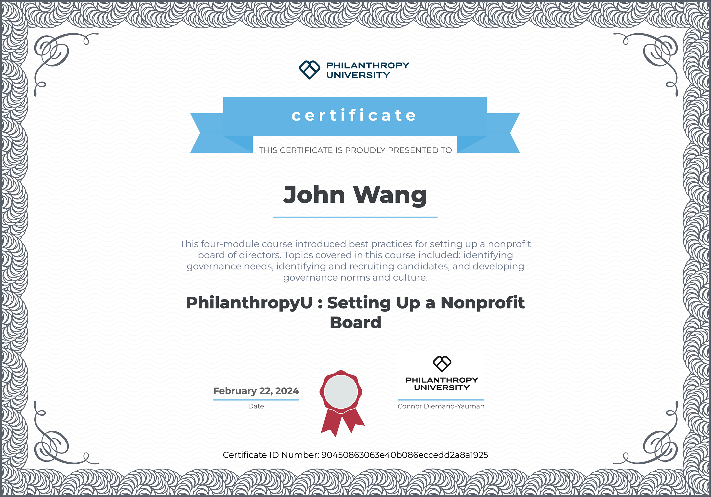
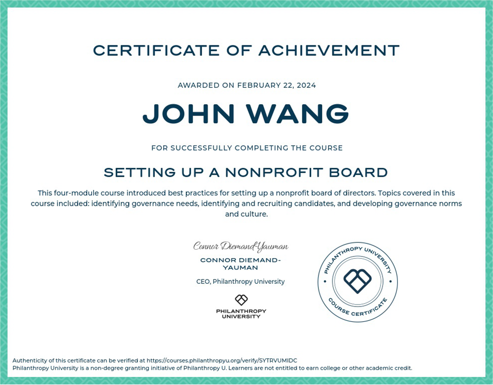
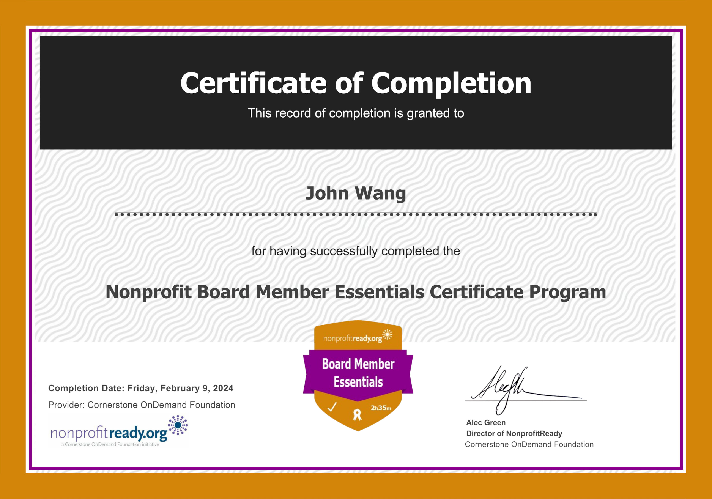
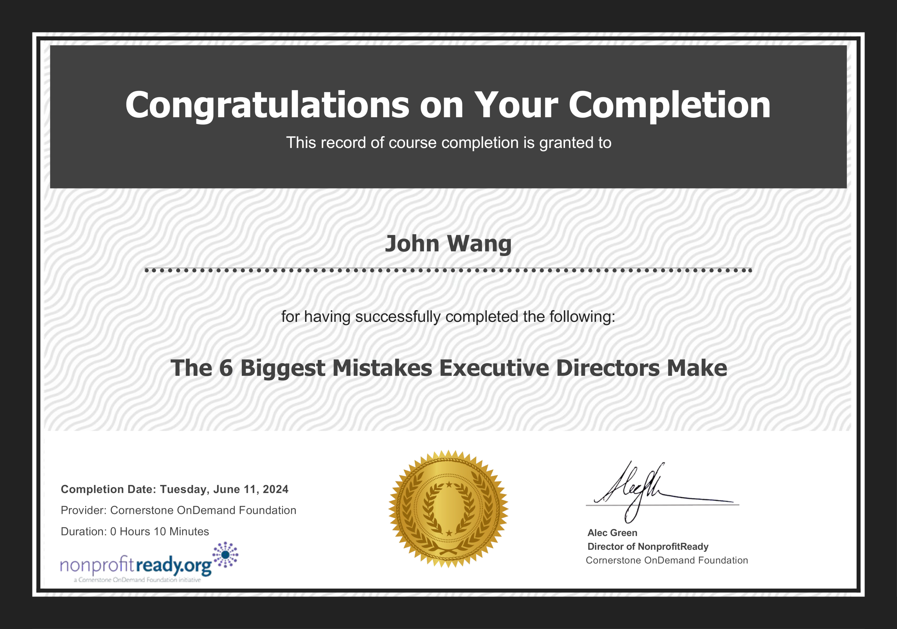
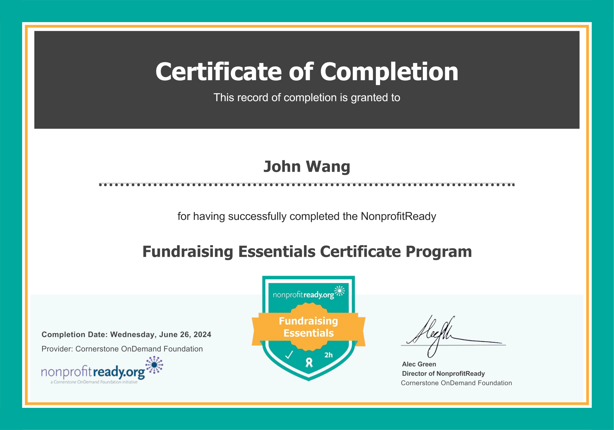
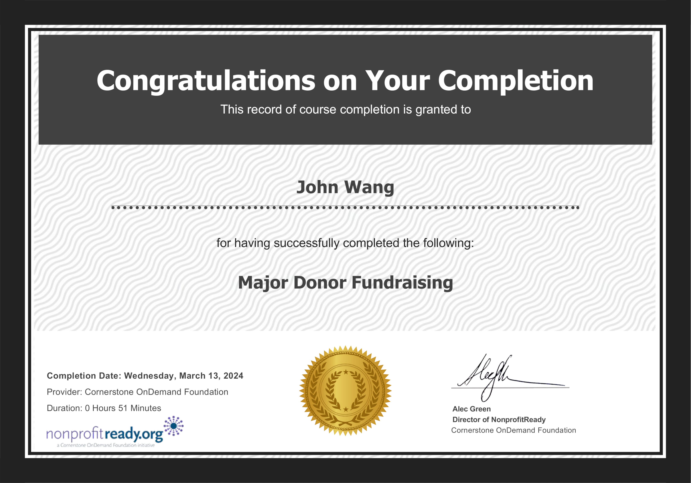
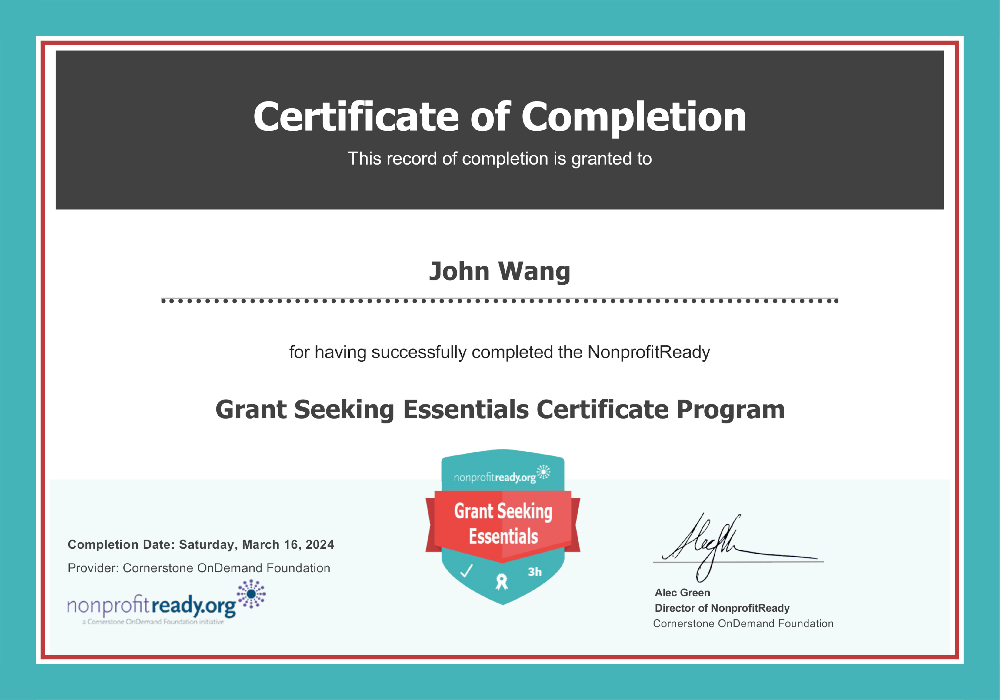
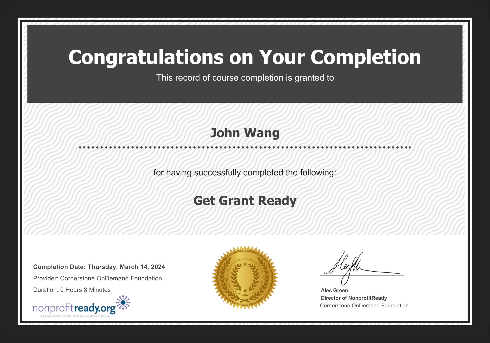
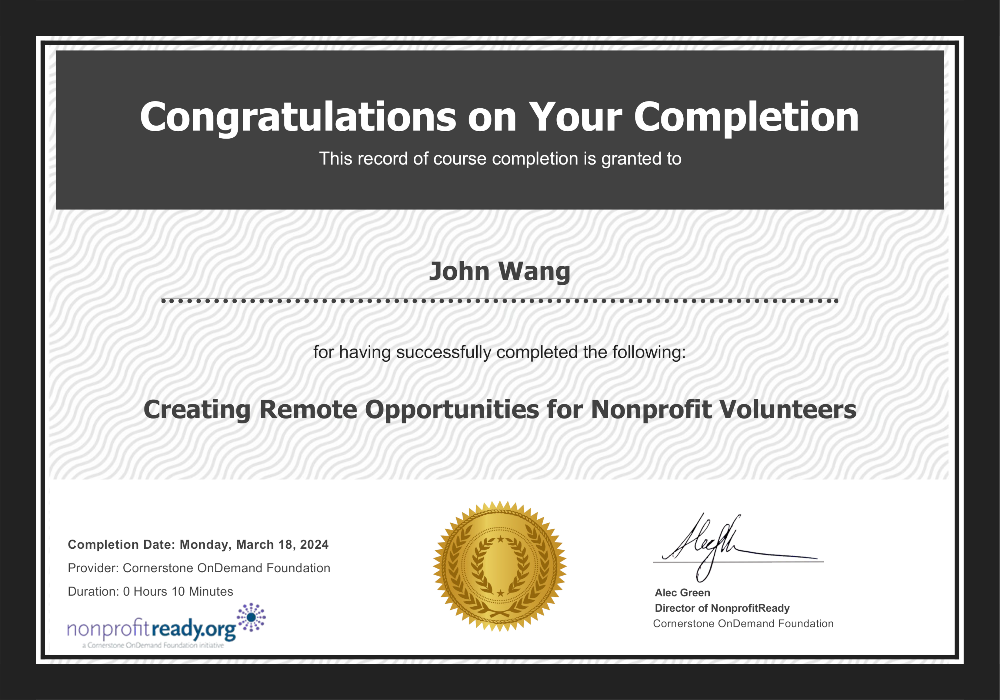

John's Nonprofit Certificates
Fundamentals (1)
Nonprofit Essentials Certificate from Cornerstone OnDemand Foundation

Board of Directors (3)
Setting Up a Nonprofit Board from Philanthropy University


Nonprofit Board Member Essentials Certificate from Cornerstone OnDemand Foundation

The 6 Biggest Mistakes Executive Directors Make from NonprofitReady by Cornerstone OnDemand Foundation

Fundraising (2)
Fundraising Essentials Certificate from Cornerstone OnDemand Foundation

Major Donor Fundraising from Cornerstone OnDemand Foundation

Grant Writing (2)
Grant Seeking Essentials Certificate from Cornerstone OnDemand Foundation

Get Grant Ready from Cornerstone OnDemand Foundation

Volunteer Engagement (1)
Creating Remote Opportunities for Nonprofit Volunteers from Cornerstone OnDemand Foundation
